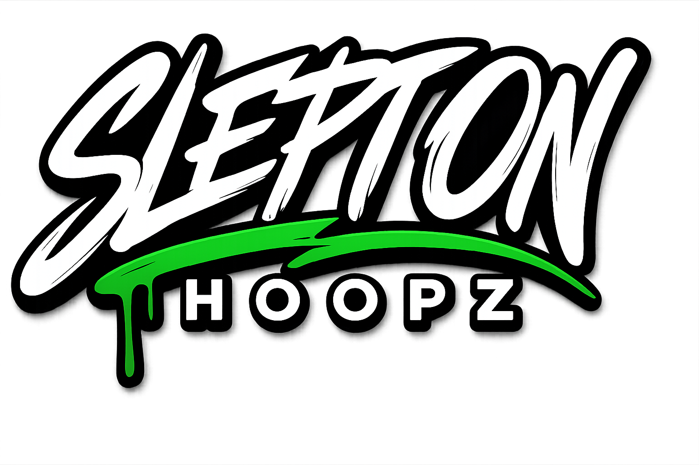

24.0M
Views
Generated in the last 365 days
Marketing Portfolio
Marketing graduate from Sheridan College with hands-on experience in short-form content strategy, brand building, social media, and customer-focused marketing.
Generated 23.9M+ YouTube views, 108K+ watch hours, and 8.2K subscribers in 365 days through short-form basketball content.
Sheridan College marketing graduate focused on content, brand messaging, and measurable audience growth.
About
I am a Marketing graduate from Sheridan College with experience in content creation, brand development, customer communication, sales communication, and sports-based business building.
My work focuses on understanding an audience, creating clear messaging, and building content that gets people to take action. I like marketing that feels direct, useful, and easy for people to connect with.
During my marketing studies at Sheridan College, I worked with Adobe InDesign, Photoshop, and Illustrator, and I use DaVinci Resolve Studio to edit short-form videos for my content channels.
I am especially interested in marketing roles, social media marketing, content marketing, brand assistant roles, marketing coordinator roles, campaign planning, and sponsorships and partnerships.
Results
Through short-form basketball content, I generated 23.9M+ views, 108K+ watch hours, and 8.2K subscribers in the last 365 days. This shows my ability to identify engaging topics, package content for attention, write strong hooks, and create platform-specific content that drives measurable audience growth.
24.0M
Generated in the last 365 days
108.1K
Audience attention driven through short-form content
8.2K
Converted viewers into subscribers
3
Top videos generated 9.9M+ combined views
Performance data based on YouTube Studio analytics screenshots and framed as owned content performance, not paid advertising or client work.
Skills
A mix of creative, analytical, and communication-focused skills shaped by my marketing education, sports content work, and hands-on brand-building projects.
Tools
Through my marketing education at Sheridan College, I gained hands-on experience using Adobe Creative Cloud tools including InDesign, Photoshop, and Illustrator for design, layout, and visual marketing projects. I also use DaVinci Resolve Studio to edit short-form video content, including YouTube Shorts that generated measurable audience growth.
Work
Selected portfolio work showing brand development, campaign planning, digital product thinking, and short-form content strategy for marketing roles.
Project 01
A sports-based marketing project focused on building a basketball training brand, creating program offers, planning digital products, and developing customer-facing messaging.
Marketing skills shown: Brand positioning, offer development, content planning, customer communication, digital product marketing, and brand management.

Project 02
A content marketing project focused on creating short-form videos using strong hooks, basketball topics, fast pacing, and storytelling.
Marketing skills shown: Content strategy, hook writing, audience retention, storytelling, video editing, performance review, and platform-specific marketing.
Project 03
A mock campaign designed to promote basketball training services to players and parents in the Brampton/Mississauga area.
Marketing skills shown: Campaign planning, audience targeting, social media strategy, community engagement, and lead generation.
Experience
A concise look at the responsibilities and communication experience behind the portfolio without repeating the full resume.
Coordinated league schedules, game-day logistics, and communication with coaches, players, and parents. Supported smooth youth basketball program execution while improving participant experience and engagement.
Skills highlighted: Event coordination, stakeholder communication, community engagement, scheduling, and problem solving.
Built and managed a digital content platform focused on basketball content, audience growth, brand positioning, and short-form video performance.
Skills highlighted: Content creation, content strategy, audience growth, brand management, social media marketing, and performance review.
Provided technical assistance, supported user communication, maintained documentation, and contributed to smoother operational workflows.
Skills highlighted: Customer communication, technical support, documentation, problem solving, and operational support.
Content
A content marketing case study showing how short-form basketball videos were packaged, scripted, and edited to capture attention and drive measurable audience growth. Viewers can also visit the full SleptOnHoopz YouTube channel to see more of my short-form basketball content.
Key result: Generated over 4.7M views and gained 3.1K subscribers through a short-form basketball video built around a simple hook, fast pacing, and a clear entertainment angle.
Marketing skill demonstrated: Hook writing, content packaging, audience retention, and short-form storytelling.
Watch VideoKey result: Generated over 3.2M views and gained 1.1K subscribers by turning a basketball moment into a curiosity-driven short-form video.
Marketing skill demonstrated: Topic selection, curiosity-based packaging, content scripting, and platform-specific marketing.
Watch VideoKey result: Generated over 1.9M views and gained 897 subscribers with a fast-paced basketball Short designed to capture attention quickly.
Marketing skill demonstrated: Short-form content strategy, audience retention, storytelling, and sports-focused content creation.
Watch VideoTop three Shorts generated 9,966,016 combined views and 5,097 subscribers gained.
Writing
A few short examples that show clear, direct writing across promotional, email, and outreach formats.
Ball handling is more than dribbling through cones. The Sleptonhoopz Ball Handling Program is built to help players improve control, rhythm, footwork, and confidence so they can use their handle in real game situations.
Subject: Take your game seriously this season
If you are looking to improve your ball handling, shooting, and basketball IQ, Sleptonhoopz training is built to help players develop skills that translate into real games. The focus is simple: better reps, smarter reads, and more confidence on the court.
Hi, my name is Marc Henriques and I create basketball and training-focused content through Sleptonhoopz. I am reaching out to explore a potential collaboration that connects your brand with athletes, players, and sports-focused audiences.
Contact
Open to marketing, social media, content, brand assistant, and marketing coordinator roles.
Brampton, Ontario
If you are hiring for a junior marketing, content, social media, or coordinator role, I would be glad to connect and share more about my work.